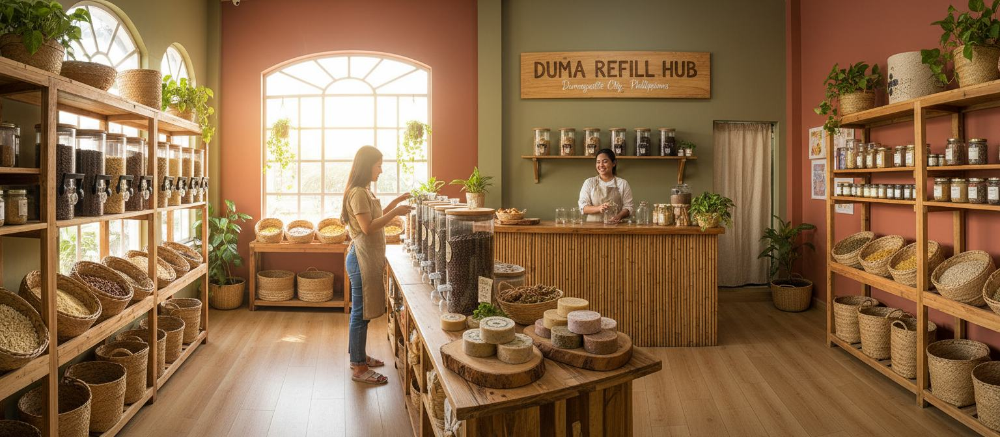
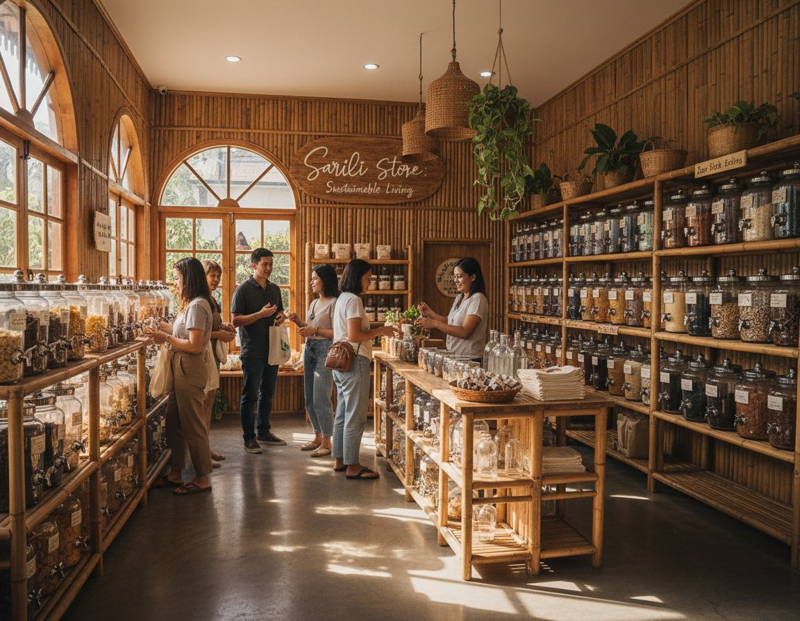
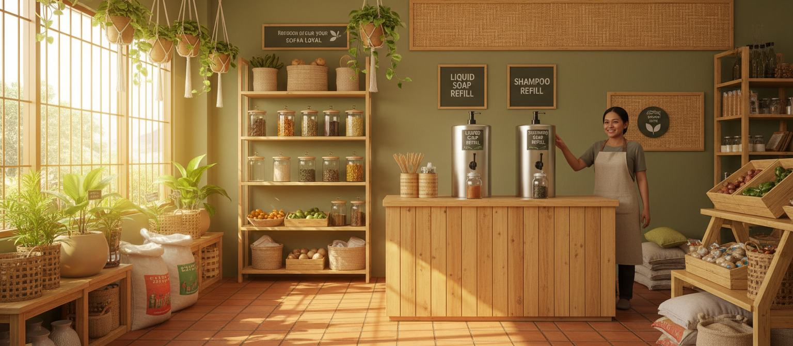
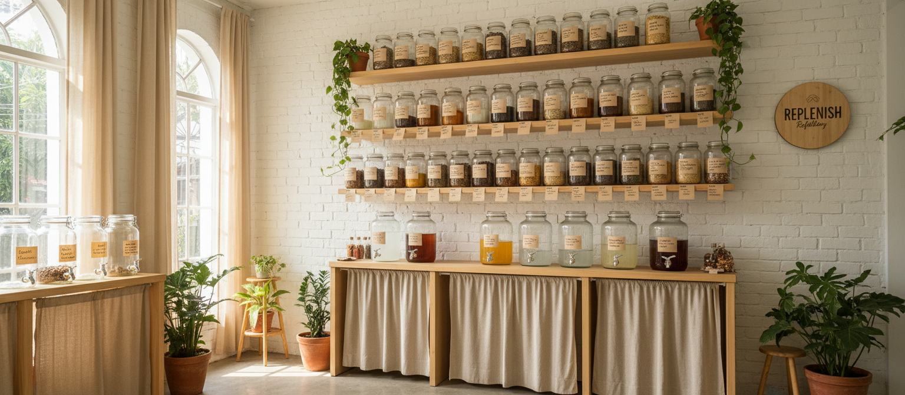
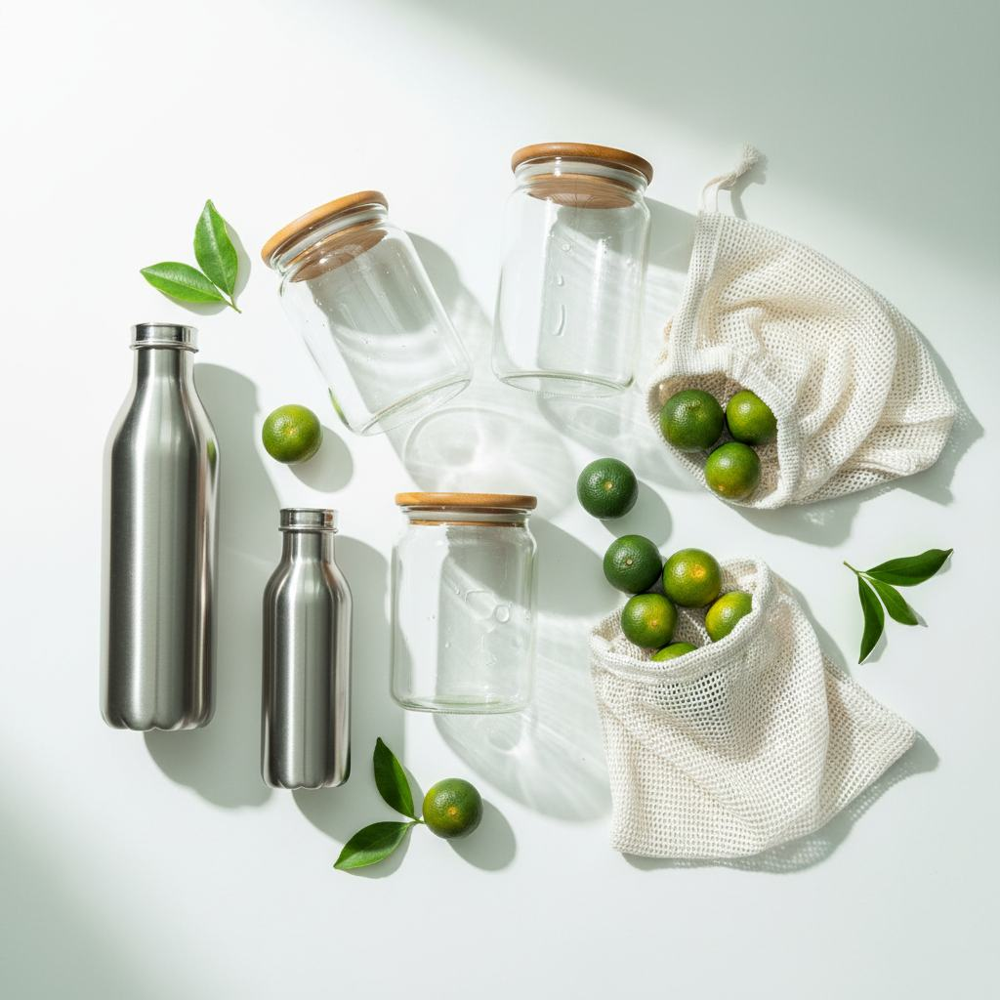

🌱 JOIN THE LOW-WASTE MOVEMENT
Refill More. Waste Less.
Locate zero-waste refill stations in your neighborhood across the Philippines. Save money, support local sari-sari stores, and help eliminate single-use plastics.

VERIFIED SPOT DIRECTORY
Browse All StationsFeatured Refill Stations
Explore verified community-led hubs helping neighborhoods reduce plastic packaging.
⌖ Poblacion, Makati City

Sari-Sari Refillery
☆ 4.8
Duma Refill Hub
☆ 5.0SIMPLE STEPS
How Refilling Works
The circular economy starts with small habits. Our platform streamlines your low-waste transition in three easy steps.
1. Bring Your Container
Clean and dry any empty jar, bottle, or dispenser you already own. There's no need to buy brand new eco-containers.
2. Find a Station Near You
Use our interactive map directory to discover verified neighborhood sari-sari stores, boutique pantries, or partner hubs.
3. Refill & Save
Weigh your container, fill up with only the amount you need, and pay by the gram or milliliter. Save money and ditch plastic!
LOW-WASTE LIFESTYLE
Quick Low-Waste Tips
Adopting a sustainable, package-free lifestyle doesn't need to be hard. Start with these simple, practical daily habits.
♧
Always Carry a Reusable Bag
Keep lightweight, compact katsa (canvas) tote bags and mesh produce nets inside your everyday bag.
♧
Pre-wash & Dry Containers
Thoroughly wash and completely dry old jars, pump bottles, or food tubs before visiting a station.
♧
Buy in Bulk to Reduce Packaging
Purchase dry goods like local rice, coffee, sugar, and seasonings by weight.
♧
Choose Glass or Metal over Plastic
Prioritize infinitely recyclable glass jars and sturdy steel containers. They last longer and clean better.

HELP US GROW THE DATABASE
Know a Refill Spot in Your Barangay?
Help us expand the crowdsourced network! If there is a local sari-sari refill counter, bulk store, or sustainable hub in your area, submit it for verification.